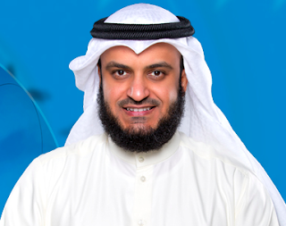

My hobby is recite al quran, nasyid, religious activity and i also playing games. There are some idols that i like and willing to be like them
1. MISYARY RASHID ALAFASY

BACKGROUND OF MISYARY RASHID ALAFASY
Shaikh Mishary Bin Rashid Alafasy is a world-renowned Qari (Qur’an reciter), imam, daee (preacher) and a Nasheed artist from Kuwait. Shaikh Mishary Alafasy is the Imam of the Grand Mosque of Kuwait also called Masjid Al-Kabir and leads the Tarawih prayers in Ramadan every year. He works for the Kuwait Ministry of Awqaf and Islamic Affairs.
Born in Kuwait on September 5, 1976, Shaikh Mishary Alafasy is a Hafiz al-Quran, having memorised the Quran between 1992-1994. He is a graduate from the Islamic University of Madinah, where he specialised in the ten proven and verified recitations of the Quran. He also holds various ijazahs by a large number of scholars of the Qur’an. He has ijazah in Aasim ibn Abi al-Najud recitation from Sheikh Abdul Rafi bin Radwan Al Sharqawi, including others. Shaikh Mishary Alafasy makes frequent appearances on television and radio stations, and his recitations are available on his official YouTube channel and thousands of other channels started by his admirers.
Misyary Rashid Youtube Channel
2. FARHATUL FAIRUZAH
BACKGROUND OF FARHATUL FAIRUZAH
Farhatul is the youngest of five siblings to former qaris and qariahs, the late Haji Panut Markum and Hajah Jaliah Simin - Currently studying in form six at Sekolah Menengah Agama Perempuan Labu, Negeri Sembilan seven years - At the recent national competition, Farhatul was crowned the champion while his sister, Nor Faizah, became the runner -up - Interesting to know, all Farhatul's siblings actively participated in the recitation competition - Farhatul admitted to reciting the Quran every time he finished obligatory prayers, apart from not taking iced drinks to keep the voice - Farhatul aspires to be a lecturer and intends to open a tarannum class one day